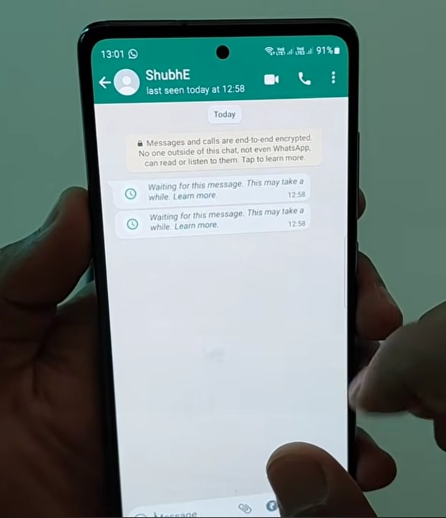
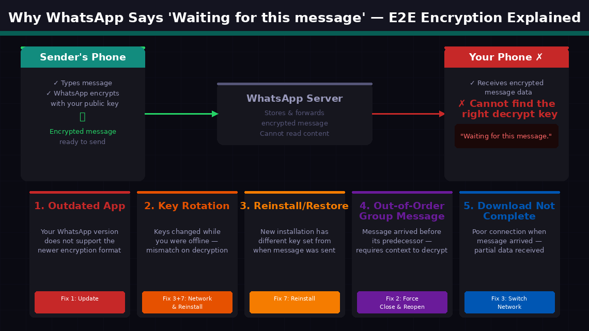
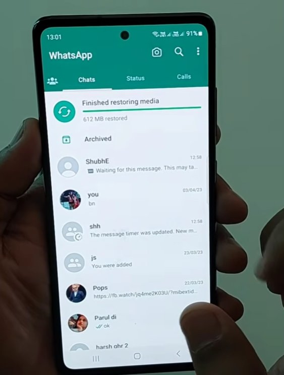
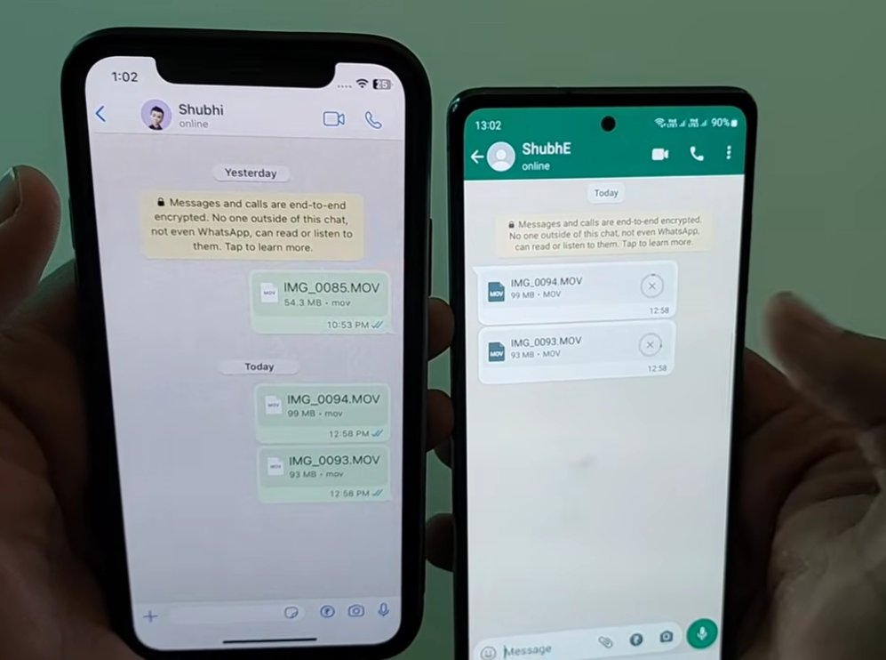
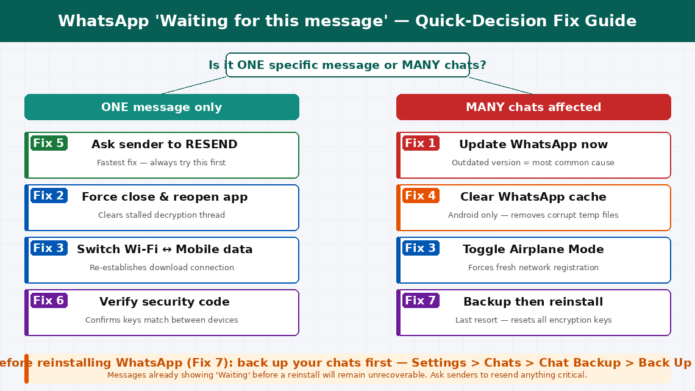

WhatsApp "Waiting for this message" — Explained and Fixed
This message appears when your device has received notification that a WhatsApp message exists but can't yet decrypt it. It's in most cases caused by a version mismatch — one side has updated WhatsApp, the other hasn't — or a temporary key sync issue that resolves itself once both apps are updated and the message is resent. You're not missing the message permanently.
What Does “Waiting for this message” Actually Mean?
In practice: “Waiting for this message. This may take a while.” means your device cannot currently decrypt the message you received.
WhatsApp uses end-to-end encryption for all messages. When someone sends you a message, it is encrypted on their device using a unique cryptographic key before it travels across the internet. WhatsApp’s servers store and forward the encrypted message — but they cannot read it. Only your device, which holds the matching decryption key, can unlock and display the content.
The “Waiting for this message” placeholder appears when your device has received the notification that a message exists — but cannot yet decrypt it. Your phone and the message are speaking slightly different versions of the same encrypted language, and your phone is waiting until it can translate it correctly.

Why Does WhatsApp Show This?

The five most common reasons this appears:
- Your WhatsApp is outdated. WhatsApp periodically updates its encryption protocol. If your version is significantly behind the sender’s, your app may not have the decryption capability for messages encrypted with a newer format. This is the most common cause — Fix 1 addresses it directly.
- Encryption keys have rotated. WhatsApp’s security system periodically generates new encryption keys. If a message was sent to an older key version and your app has since rotated to newer keys, a key mismatch occurs.
- You recently reinstalled WhatsApp, restored from backup, or switched phones. During these transitions, the local encryption key store is rebuilt. Messages encrypted for your previous key set cannot be decrypted by the new installation.
- A forwarded or group message arrived out of order. Certain message types require previous context to decrypt correctly, and if they arrive out of sequence, decryption stalls.
- The message hasn’t fully downloaded yet due to a poor connection at the moment the message arrived.
7 Step-by-Step Fixes
Try each fix in sequence, starting from the top.
An outdated WhatsApp version is the single most common cause. WhatsApp rolls out encryption protocol updates gradually — if your version is even a few builds behind the sender’s, you may lack the decryption capability for their message format.
- Open the Google Play Store (Android) or App Store (iPhone).
- Search for “WhatsApp” or go to your installed apps list.
- If an Update button is available, tap it. Even if you updated recently, check again — WhatsApp releases updates frequently.
- Once updated, open WhatsApp and navigate to the conversation with the waiting message.
- Wait 30–60 seconds — the app sometimes needs a moment to re-attempt decryption after an update.
- Enable automatic updates for WhatsApp to prevent recurrence:
- Android: Play Store → Profile → Manage Apps → WhatsApp → Enable auto-update
- iPhone: Settings → App Store → App Updates (toggle on)
Sometimes the decryption process stalls mid-attempt — the encrypted message data has arrived but the app’s decryption thread has frozen. Force closing and reopening the app restarts this process cleanly.
- Android: Press the Recent Apps button, find WhatsApp, and swipe it away. Or go to Settings → Apps → WhatsApp → Force Stop.
- iPhone: Swipe up from the bottom (or double-press Home on older models), find WhatsApp in the app switcher, and swipe it upward to close.
- Wait 10 seconds after fully closing.
- Reopen WhatsApp and navigate directly to the conversation with the waiting message.
- If the message is still showing the placeholder, scroll away from it and back to trigger a re-render.
A message marked as “waiting” may simply not have fully downloaded yet — particularly if your phone’s connection was weak when the message arrived. WhatsApp requires a stable connection to complete the message decryption process.
- Confirm your connection is working — open a browser and load any webpage.
- If on mobile data, switch to Wi-Fi. If on Wi-Fi, switch to mobile data.
- Toggle Airplane Mode on for 10 seconds, then off. This forces the phone’s radio to re-establish a fresh network connection.
- Once reconnected, wait 30 seconds then check the waiting message again.
On Android, WhatsApp maintains a cache of temporary data including partial message downloads. A corrupted cache can cause message decryption to stall persistently.
- Open your phone’s Settings app.
- Go to Apps (or Application Manager on older Android).
- Tap WhatsApp → Storage.
- Tap Clear Cache — do not tap “Clear Data,” which would delete locally stored messages.
- Return to WhatsApp and check the waiting message.
This is the most direct and often the most practical fix — particularly for a single stuck message. If the original encrypted message data is corrupted in transit, no amount of local app fixing will decrypt it. Asking for a resend creates a new, fresh encrypted copy.
- Reply to the sender in the same chat and let them know you see a “Waiting for this message” placeholder.
- Ask them to send it again.
- When they resend, the new message will be encrypted fresh for your current key set and should display normally.
- The original “waiting” placeholder will likely remain in the chat history — this is normal. It represents the unrecoverable original.
- If the resent message also shows “Waiting for this message,” the issue is more systemic — likely an encryption key mismatch. Continue to Fix 6.

When WhatsApp shows persistent “waiting” messages with a specific contact — particularly after one of you reinstalled the app or switched phones — the encryption key pairing between your two devices may have broken. WhatsApp has a built-in tool to verify this.
- Open the conversation with the person whose message is stuck.
- Tap their name at the top of the chat to open their contact info.
- Scroll down and tap Encryption (or “View Security Code”).
- A 60-digit security code and a QR code will appear.
- Compare this code with what appears on the sender’s phone for the same conversation — read the numbers to each other over a call, or have them screenshot their code.
- If the codes match: The encryption channel is healthy. The issue is a server-side or version mismatch — continue to Fix 7.
- If the codes don’t match: The encryption key has changed. The pending “waiting” messages from before the key change cannot be recovered, but new messages will work normally.
If “waiting” messages persist across multiple contacts and no individual fix has resolved it, a clean reinstall resets all local encryption key data and forces a fresh synchronisation with WhatsApp’s servers.
- Back up your chats as described above. Confirm the backup completed.
- Uninstall WhatsApp from your phone.
- Wait 60 seconds.
- Reinstall WhatsApp from the Play Store or App Store.
- During setup, restore from your backup when prompted.
- Allow WhatsApp to fully sync — this can take several minutes depending on backup size.
- Check whether the issue has resolved for new incoming messages.


When to Contact WhatsApp Support
The “Waiting for this message” issue is almost entirely a software and account-level problem. However, there are situations where escalating is appropriate:
- The issue affects every single message from every contact and persists through a full reinstall. This may indicate a phone-level issue — a corrupted system date/time (which breaks cryptographic verification), or a network-level issue where your ISP is interfering with WhatsApp’s server connections.
- You suspect account compromise. If you see “waiting” messages combined with unusual activity — contacts receiving messages from you that you didn’t send — contact WhatsApp support immediately.
- You’re in a region where WhatsApp connectivity is restricted. Some corporate networks or ISPs filter WhatsApp traffic, causing persistent message delivery failures.
To contact WhatsApp support:
- Open WhatsApp → Settings → Help → Contact Us
- Email: support@whatsapp.com
- Support portal: faq.whatsapp.com
WhatsApp does not offer phone support — all support is handled via email and in-app chat. Response times vary from a few hours to 2–3 business days.
Quick Summary
| Fix | Difficulty | Time Needed |
|---|---|---|
| Update WhatsApp to the latest version | Very Easy | 3 minutes |
| Force close and reopen WhatsApp | Very Easy | 1 minute |
| Switch networks / toggle Airplane Mode | Very Easy | 2 minutes |
| Clear WhatsApp cache (Android) | Easy | 2 minutes |
| Ask sender to resend the message | Very Easy | 1 minute |
| Verify security code with sender | Easy | 5 minutes |
| Reinstall WhatsApp with chat backup | Moderate | 15 minutes |
Start with Fix 1 (update) — an outdated WhatsApp is the most common cause by a significant margin. Follow immediately with Fix 5 (ask for a resend) if only one or two specific messages are affected, because a fresh send is faster than any technical fix and works every time.